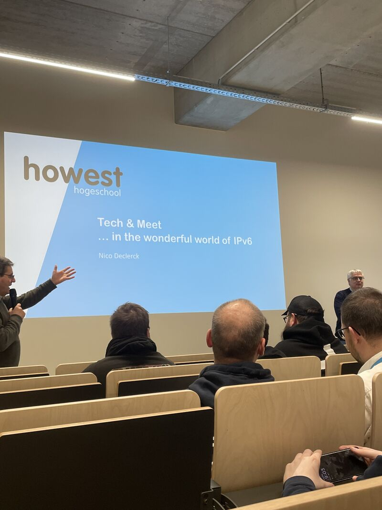

Tech & Meet on IPv6 at Howest
Tech & Meet: Transitioning to IPv6
Op 25 november ging ik naar een Tech & Meet van Howest over “Transitioning to IPv6”. De spreker was Nico Declerck, die actief is bij Howest CyberSecurity, Cisco Networking en BiASC. Hij begon met een korte intro en wisselde zijn slides over IPv6 grappig genoeg af met weetjes over Brugse bieren, waardoor het luchtig bleef.
De sessie ging over de overstap van IPv4 naar IPv6. IPv4 was prima voor zijn tijd maar werd snel ontworpen en is niet klaar voor de toekomst. Het heeft maar zo’n 4,3 miljard adressen, terwijl IPv6 er ongeveer 340 sextiljoen aankan. Dat is dus echt een gigantisch verschil.
Daarna ging Nico dieper in op de technische verschillen. IPv6 gebruikt langere hexadecimale adressen, is efficiënter en heeft een eenvoudigere structuur waardoor routers sneller werken. Beveiliging zit ook beter ingebouwd dankzij IPsec. Hij toonde features zoals SLAAC, waarmee toestellen zichzelf configureren zonder DHCP-server. Wat me bijbleef: we houden IPv4 eigenlijk al jaren met NAT in leven, terwijl dat maar een tijdelijke oplossing moest zijn.
Hij liet ook statistieken zien van het IPv6-gebruik wereldwijd en in België, waar al zo’n 70% op IPv6 draait. Toch zijn veel IT’ers er nog niet mee bezig en in opleidingen ligt de nadruk vaak nog op IPv4.
Voor mij was de technische info niet helemaal nieuw, want we hadden IPv6 al gezien in Computer Networks. Maar er lag hier veel meer nadruk op het “waarom”, en daardoor besefte ik pas hoe belangrijk de overstap is. Als student Software Engineering vond ik het ook leuk om eens een andere kant van IT te zien, buiten development. Het toont gewoon hoe breed de techwereld eigenlijk is.